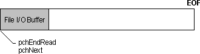
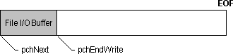
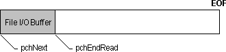
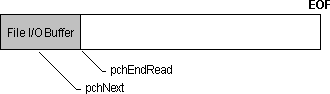
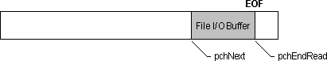
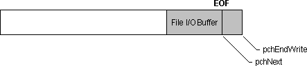

title: Buffered Services description: Buffered Services ms.assetid: 4816ab05-42fc-4c22-b753-8fd153d88c27 keywords:
[The feature associated with this page, Multimedia File I/O, is a legacy feature. It has been superseded by Source Reader. Source Reader has been optimized for Windows 10 and Windows 11. Microsoft strongly recommends that new code use Source Reader instead of Multimedia File I/O, when possible. Microsoft suggests that existing code that uses the legacy APIs be rewritten to use the new APIs if possible.]
Most of the overhead in file I/O occurs when accessing the media device. If you are reading or writing many small blocks of information, the device can spend a lot of time moving to the physical location on the media for each read or write operation. In this case, you can achieve better performance by using buffered file I/O services. With buffered I/O, the file I/O manager maintains an intermediate buffer larger than the blocks of information you are reading or writing. It accesses the device only when the buffer must be filled from or written to the disk.
Before you set up and use buffered file I/O, you must decide whether you want the file I/O manager or the application to allocate the buffer. It is simpler to let the file I/O manager allocate the buffer. However, you can let the application allocate the buffer if you want to directly access the buffer or open a memory file. For more information about using memory files, see Performing Memory File I/O. For an example of directly accessing an I/O buffer, see Accessing a File I/O Buffer
A buffer allocated by the file I/O manager is called an internal I/O buffer. To open a file for buffered I/O using an internal buffer, specify the MMIO_ALLOCBUF flag when you open the file with the mmioOpen function. The following illustration shows the initial state of the file I/O buffer after a file is opened for a buffered read operation. The buffering is transparent — you read and seek as if you were using unbuffered I/O. The mmioOpen function has set pchNext and pchEndRead to point to the beginning of the file I/O buffer.

The following illustration shows the initial state of the file I/O buffer after a file is opened for a buffered write operation. The mmioOpen function has set pchNext to point to the beginning of the file I/O buffer and pchEndWrite to point to the end of the buffer.

The default size of the internal I/O buffer is 8K. If this size is not adequate, you can use the mmioSetBuffer function to change the buffer size. You can also use this function to enable buffering on a file opened for unbuffered I/O, or to supply your own buffer for use as a memory file.
You can force the contents of an I/O buffer to be written to disk by using the mmioFlush function. However, when you close a file by using the mmioClose function, you do not have to call mmioFlush to flush an I/O buffer — the mmioClose function automatically flushes it. If you run out of disk space, mmioFlush could fail, even if the preceding calls to the mmioWrite function were successful. Similarly, mmioClose could fail when it is flushing its I/O buffer.
Applications that are performance-sensitive, such as those that stream data in real time from a CD-ROM, can optimize file I/O performance by directly accessing the I/O buffer. You should be careful if you choose to do this, because you bypass some of the safeguards and error checking provided by the file I/O manager.
The multimedia file I/O manager uses the MMIOINFO structure to maintain state information about an open file. You use three members in this structure to read and write the I/O buffer: pchNext, pchEndRead, and pchEndWrite. The pchNext member points to the next location in the buffer to read or write. You must increment this member as you read and write the buffer. The pchEndRead member identifies the last valid character you can read from the buffer. Likewise, this member identifies the last location in the buffer you can write. More precisely, both pchEndRead and pchEndWrite point to the memory location that follows the last valid data in the buffer. Use the mmioGetInfo and mmioSetInfo functions to retrieve and set state information about the file I/O buffer. The following illustration shows the state of the I/O buffer after the application calls mmioAdvance during a read operation. The mmioAdvance function fills the buffer and sets the pchEndRead pointer to the end of the buffer.

In the following illustration, the application reads from the I/O buffer at the location specified by pchNext, and advances the pointer.

Similarly, for a write operation, the application writes to the I/O buffer and advances the pchNext pointer, as shown in the following illustration.
After the application fills the buffer, it calls mmioAdvance to flush the buffer to disk. The mmioAdvance function resets pchNext to point to the beginning of the buffer, as shown in the following illustration.
When you reach the end of the I/O buffer, you must advance the buffer to fill it from the disk, if you are reading, or flush it to the disk, if you are writing. Use the mmioAdvance function to advance an I/O buffer. To fill an I/O buffer from disk, use mmioAdvance with the MMIO_READ flag. If there is not enough data remaining in the file to fill the buffer, the pchEndRead member of the MMIOINFO structure points to the location following the last valid byte in the buffer. To flush a buffer to disk, set the MMIO_DIRTY flag in the dwFlags member of the MMIOINFO structure and then call mmioAdvance with the MMIO_WRITE flag.
For example, during a read operation, the mmioAdvance function sets pchEndRead to point to the end of valid data in the buffer, as shown in the following illustration.

Similarly, during a write operation, the application calls mmioAdvance to flush the buffer and advance pchNext to the end of valid data in the buffer, as shown in the following illustration.

Â
Â